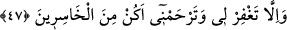

Nûh (a.s.), karıştırmaması gereken bir şeyi karıştırdığı için azarlandı.
47. (Nûh) dedi ki: “Rabbim, hakkında bilgim olmayan bir şeyi senden istemekten
sana sığınırım. Eğer beni bağışlamaz ve bana acımızsan ziyana uğrayanlardan
olurum.”
Bunun üzerine Nûh (a.s.) “dedi ki:” “Yâ Rabbi bu mükellefiyeti kabul ettim. Bir daha
aynı istekte bulunmayacağım. Yalnız bu istekte bulunmaktan sadece senin yardımın ve
yol göstermenle sakınabilirim.” Bu yüzden Nûh söze şöyle başladı: “Rabbim, hakkında
bilgim olmayan” gerçekleşmesinin hikmet gereği olduğunu bilmediğim “bir şeyi
senden istemekten” yani bundan sonra böyle bir talepte bulunmaktan “sana sığınırım.”
Yâ Rab! Bugünden itibaren böyle bir istekte bulunmaktan beni koru.
Hz. Nûh, vefat edinceye kadar ettiği bu istiğfar üzere sâbit kadem olmuştur. Zâten
sâlihlerin âdeti, kendilerine bir şey öğütlendiği zaman ona göre davranmak, bir
hatâlarına dikkat çekildiğinde istiğfar edip Allah’a sığınmaktır. Allah Teâlâ,
peygamberlerin başından geçen bu tür hâdiseleri, gerek istiğfâr konusunda gerekse
kendi rahmetinden ümid kesmemek konusunda herkes peygamberlere uysun diye
anlatmıştır. “Ey Nûh! bizden selâm ve bereketlerle (gemiden) in.” (Hûd, 11/48)
âyetinin de delâlet etiği üzere Allah Teâlâ Nûh (a.s.)’ın bu tevbesini kabul buyurmuştur.
Gerçek tevbe iki şeye bağlıdır: Biri, gelecekte o işi yapmamaya kesin karar vermektir.
“Sana sığınırım” ifadesinde buna işâret vardır. Diğeri geçmişte yapılana pişman olup
bağışlanma istemektir (istiğfar). Buna da şu ifade ile işâret edilmektedir: “Eğer beni
bağışlamaz ve bana acımazsan ziyana uğrayanlardan olurum.” yani benden sâdır olan
mezkûr isteği bağışlamaz, tevbemi kabul ederek bana acımazsan, bu yüzden amel
bakımından ziyâna uğrayanlardan olurum. Çünkü Allah’a şükretmekten gafil olmak, hele
hele böyle düşmanlar helâk olurken kurtulmak gibi büyük bir nimete kavuşmuşken
şükretmemek; özellikle de hakkında: “onun yaptığı kötü bir iştir” buyrulan birini
kurtarma çareleri aramak gibi faydasız şeylerle uğraşıp onun için Allah’a yalvarmak
kazancı olmayan, kesinlikle ziyân olan bir davranıştır.
Bilesin ki tevbe, istiğfar etmek ve Melik ve Gaffâr olan Allah’a sığınmak, ölünceye
kadar ardı kesilmemesi gereken bir vird, hayatın sonuna kadar devam etmesi gereken
bir fiildir. Çünkü mü’min, mânevî iniş-çıkışlar (tenezzülât-terakkıyât) arasında
durmadan gelir gider. Sâlik, perdelenme (istitâr) tecelliler ile dâimâ mübtelâ olur.
Kâmil ise sıfat ve zat âlemlerinde seyr mertebelerinin sonlarına doğru peyderpey
yükselir durur. İşte Nûh (a.s.), mezkûr istekte bulundu, sonra tevbe etti. İşte Mûsâ (a.s.),
bir takım isteklerde bulundu ama sonra Allah’a yöneldi. Bütün bunlar, Allah Teâlâ’nın